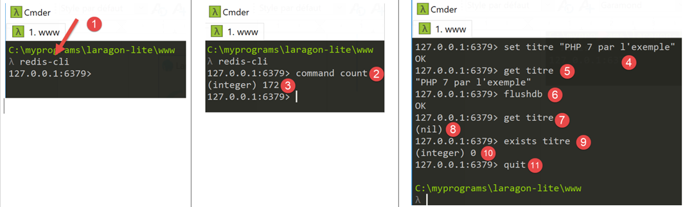

33. Application exercise: version 13
version 13 modifies version 12 in the following ways:
- Certain parts of the code are restructured (refactoring);
- session management is handled differently using the [flask_session] module;
- encrypted passwords are used in the configuration file;
version 13 is initially obtained by copying version 12:


- in [1], the configuration will be refactored. In particular, it will be moved out of the [flask] folder;
- in [2], the main script will be refactored. It is also moved out of the [flask] folder;
- in [3], the configuration will be split across multiple files;
- In [4]: We will simplify the main script [main] by moving code to other files;
- in [5], the authentication controller will be modified since user passwords will now be encrypted;
- In [6], the main controller will incorporate code previously present in the main script [main];
33.1. Refactoring of the application configuration

Three new configuration files are added:
- [mvc]: to configure the application’s architecture MVC;
- [parameters]: which will collect all the application constants;
- [syspath]: which configures the application’s Python Path;
The [syspath.py] file is as follows:
def configure(config: dict) -> dict:
import os
# folder of this file
script_dir = os.path.dirname(os.path.abspath(__file__))
# root path
root_dir = "C:/Data/st-2020/dev/python/cours-2020/python3-flask-2020"
# dependencies
absolute_dependencies = [
# project files
# BaseEntity, MyException
f"{root_dir}/classes/02/entities",
# InterfaceImpôtsDao, InterfaceImpôtsMétier, InterfaceImpôtsUi
f"{root_dir}/impots/v04/interfaces",
# AbstractImpôtsdao, ImpôtsConsole, ImpôtsMétier
f"{root_dir}/impots/v04/services",
# ImpotsDaoWithAdminDataInDatabase
f"{root_dir}/impots/v05/services",
# AdminData, ImpôtsError, TaxPayer
f"{root_dir}/impots/v04/entities",
# Constants, slices
f"{root_dir}/impots/v05/entities",
# Logger, SendAdminMail
f"{root_dir}/impots/http-servers/02/utilities",
# main script folder
script_dir,
# configs [database, layers, parameters, controllers, views]
f"{script_dir}/../configs",
# controllers
f"{script_dir}/../controllers",
# answers HTTP
f"{script_dir}/../responses",
# view models
f"{script_dir}/../models_for_views",
]
# set the syspath
from myutils import set_syspath
set_syspath(absolute_dependencies)
# we return the configuration
return {
"root_dir": root_dir,
"script_dir": script_dir
}
- The [syspath] script is used to configure the application’s Python Path (lines 40–41);
- it provides two pieces of information useful to other configuration scripts (lines 45–46);
The [mvc] script configures the MVC architecture of the jSON / XML / HTML web application:
def configure(config: dict) -> dict:
# application configuration MVC
# controllers
from AfficherCalculImpotController import AfficherCalculImpotController
from AuthentifierUtilisateurController import AuthentifierUtilisateurController
from CalculerImpotController import CalculerImpotController
from CalculerImpotsController import CalculerImpotsController
from FinSessionController import FinSessionController
from GetAdminDataController import GetAdminDataController
from InitSessionController import InitSessionController
from ListerSimulationsController import ListerSimulationsController
from MainController import MainController
from SupprimerSimulationController import SupprimerSimulationController
# answers HTTP
from HtmlResponse import HtmlResponse
from JsonResponse import JsonResponse
from XmlResponse import XmlResponse
# view models
from ModelForAuthentificationView import ModelForAuthentificationView
from ModelForCalculImpotView import ModelForCalculImpotView
from ModelForErreursView import ModelForErreursView
from ModelForListeSimulationsView import ModelForListeSimulationsView
# authorized shares and their controllers
controllers = {
# initialization of a calculation session
"init-session": InitSessionController(),
# user authentication
"authentifier-utilisateur": AuthentifierUtilisateurController(),
# tax calculation in individual mode
"calculer-impot": CalculerImpotController(),
# batch mode tax calculation
"calculer-impots": CalculerImpotsController(),
# list of simulations
"lister-simulations": ListerSimulationsController(),
# deleting a simulation
"supprimer-simulation": SupprimerSimulationController(),
# end of calculation session
"fin-session": FinSessionController(),
# display tax calculation view
"afficher-calcul-impot": AfficherCalculImpotController(),
# obtaining data from tax authorities
"get-admindata": GetAdminDataController(),
# main controller
"main-controller": MainController()
}
# different types of response (json, xml, html)
responses = {
"json": JsonResponse(),
"html": HtmlResponse(),
"xml": XmlResponse()
}
# HTML views and their models depend on the state rendered by the controller
views = [
{
# authentication view
"états": [
700, # /init-session - success
201, # /authentifier-user failure
],
"view_name": "views/vue-authentification.html",
"model_for_view": ModelForAuthentificationView()
},
{
# tax calculation
"états": [
200, # /authentifier-user success
300, # /calculate-tax-success
301, # /calculate-tax failure
800, # /show-tax-calculation-success
],
"view_name": "views/vue-calcul-impot.html",
"model_for_view": ModelForCalculImpotView()
},
{
# view of simulation list
"états": [
500, # /lister-simulations success
600, # /suppress-simulation success
],
"view_name": "views/vue-liste-simulations.html",
"model_for_view": ModelForListeSimulationsView()
},
]
# view of unexpected errors
view_erreurs = {
"view_name": "views/vue-erreurs.html",
"model_for_view": ModelForErreursView()
}
# redirections
redirections = [
{
"états": [
400, # /end-session success
],
# redirection to URL
"to": "/init-session/html",
}
]
# return the MVC configuration
return {
# controllers
"controllers": controllers,
# answers HTTP
"responses": responses,
# views and models
"views": views,
# list of redirections
"redirections": redirections,
# view of unexpected errors
"view_erreurs": view_erreurs
}
- lines 1-101: this code is known;
- lines 105-116: the application's MVC configuration is rendered;
The [parameters] script gathers the application constants:
def configure(config: dict) -> dict:
# application setup
# script_dir
script_dir = config['syspath']['script_dir']
# application configuration
parameters = {
# users authorized to use the application
"users": [
{
"login": "admin",
"password": "$pbkdf2-sha256$29000$mPM.h3COkTIGYOzde68VIg$7LH5Q7rN/1hW.Xa.6rcmR6h52PntvVqd5.na7EtgQNw"
}
],
# log file
"logsFilename": f"{script_dir}/../data/logs/logs.txt",
# config server SMTP
"adminMail": {
# server SMTP
"smtp-server": "localhost",
# server port SMTP
"smtp-port": "25",
# director
"from": "guest@localhost.com",
"to": "guest@localhost.com",
# mail subject
"subject": "plantage du serveur de calcul d'impôts",
# tls to True if server SMTP requires authorization, False otherwise
"tls": False
},
# thread pause time in seconds
"sleep_time": 0,
# redis server
"redis": {
"host": "127.0.0.1",
"port": 6379
},
}
# we return the application settings
return parameters
- line 13: user passwords will now be encrypted;
- lines 34–38: configuration of a [Redis] server, which we will return to later;
With these new configuration files, the [config] script becomes the following:
def configure(config: dict) -> dict:
# syspath configuration
import syspath
config['syspath'] = syspath.configure(config)
# application setup
import parameters
config['parameters'] = parameters.configure(config)
# database configuration
import database
config["database"] = database.configure(config)
# instantiation of application layers
import layers
config['layers'] = layers.configure(config)
# configuration MVC of the [web] layer
import mvc
config['mvc'] = mvc.configure(config)
# we return the configuration
return config
33.2. Refactoring the main script [main]

The main script [main.py] simply starts the server:
# a mysql or pgres parameter is expected
import sys
syntaxe = f"{sys.argv[0]} mysql / pgres"
erreur = len(sys.argv) != 2
if not erreur:
sgbd = sys.argv[1].lower()
erreur = sgbd != "mysql" and sgbd != "pgres"
if erreur:
print(f"syntaxe : {syntaxe}")
sys.exit()
# configure the application
import config
config = config.configure({'sgbd': sgbd})
# dependencies
from SendAdminMail import SendAdminMail
from Logger import Logger
from ImpôtsError import ImpôtsError
import redis
# send an e-mail to the administrator
def send_adminmail(config: dict, message: str):
# send an e-mail to the application administrator
config_mail = config['parameters']['adminMail']
config_mail["logger"] = config['logger']
SendAdminMail.send(config_mail, message)
# check log file
logger = None
erreur = False
message_erreur = None
try:
# logger
logger = Logger(config['parameters']['logsFilename'])
except BaseException as exception:
# log console
print(f"L'erreur suivante s'est produite : {exception}")
# we note the error
erreur = True
message_erreur = f"{exception}"
# the logger is stored in config
config['logger'] = logger
# error handling
if erreur:
# mail to administrator
send_adminmail(config, message_erreur)
# end of application
sys.exit(1)
# start-up log
log = "[serveur] démarrage du serveur"
logger.write(f"{log}\n")
# check Redis server availability
redis_client = redis.Redis(host=config["parameters"]["redis"]["host"],
port=config["parameters"]["redis"]["port"])
# on ping the Redis server
try:
redis_client.ping()
except BaseException as exception:
# Redis not available
log = f"[serveur] Le serveur Redis n'est pas disponible : {exception}"
# console
print(log)
# log
logger.write(f"{log}\n")
# end
sys.exit(1)
# the client [redis] is stored in the config
config['redis_client'] = redis_client
# data recovery from tax authorities
erreur = False
try:
# admindata will be read-only application data
config["admindata"] = config["layers"]["dao"].get_admindata()
# success log
logger.write("[serveur] connexion à la base de données réussie\n")
except ImpôtsError as ex:
# we note the error
erreur = True
# error log
log = f"L'erreur suivante s'est produite : {ex}"
# console
print(log)
# log file
logger.write(f"{log}\n")
# mail to administrator
send_adminmail(config, log)
# the main thread no longer needs the logger
logger.close()
# if there has been an error, we stop
if erreur:
sys.exit(2)
# import routes from web application
import routes
routes.config=config
routes.execute(__name__)
- lines 56–73: a Redis server and its client are introduced;
- lines 102–104: the application routes have been externalized into the script [routes];
33.2.1. The modules [flask_session] and [redis]
The [Redis] server will be used to store user sessions. We will use the [flask_session] module to manage these sessions. This module can store user sessions in several locations. Redis is one of them, and we will use it.
The [flask_session] module must be installed in a PyCharm terminal:
(venv) C:\Data\st-2020\dev\python\cours-2020\python3-flask-2020\packages>pip install flask-session
Collecting flask-session
…
To communicate with the Redis server, we need a Redis client. This will be provided by the [redis] module, which we will also install:
(venv) C:\Data\st-2020\dev\python\cours-2020\python3-flask-2020\packages>pip install redis
Collecting redis
…
33.2.2. The Redis server
The Redis server will be used to store user sessions. The [flask_session] module works as follows:
- Each user has a session ID, and that is what is sent to the client—and only that. The client receives a session cookie only once, after its first request. This cookie contains the user’s session ID, which will not change as the client makes subsequent requests. This is why the server does not need to send a new session cookie;
- Previously, the session content was sent to the client. This will no longer be the case. The user’s session content will be stored on the Redis server;
Laragon comes with a Redis server that is not enabled by default. You must therefore start by enabling it:

- in [3], enable the server [Redis];
- In [4], leave the port [6379] that Redis uses by default;
Laragon services are automatically restarted after Redis is activated:

The Redis server can be queried in command mode. Open a Laragon terminal [6]:

- In [1], the command [redis-cli] launches the client in command mode for the Redis server;
As of July 2019, the Redis client can use 172 commands to interact with the server [https://redis.io/commands#list]. One of them, [command count] [2], displays this number [3].
Writing to [Redis] is done using the Redis command [set attribut valeur] [4]. The value can then be retrieved using the command [get attribut] [5].
It may be necessary to clear the Redis memory. This is done using the command [flushdb] [6]. Then, if you query the value of the attribute [titre] [7], you will receive a reference [nil] [8] indicating that the attribute was not found. You can also use the command [exists] [9-10] to check for the existence of an attribute.
To exit the Redis client, type the command [quit] [11].
You can also use a web interface to manage the keys stored on the Redis server. To do this, the Laragon Apache server must be running:

The following interface appears:

- in [1-4], one of the sessions stored on the Redis server;
33.2.3. Managing the Redis server in the main script [main]
The script [main] checks for the presence of the Redis server as follows:
import redis
…
# check Redis server availability
redis_client = redis.Redis(host=config["parameters"]["redis"]["host"],
port=config["parameters"]["redis"]["port"])
# on ping the Redis server
try:
redis_client.ping()
except BaseException as exception:
# Redis not available
log = f"[serveur] Le serveur Redis n'est pas disponible : {exception}"
# console
print(log)
# log
logger.write(f"{log}\n")
# end
sys.exit(1)
# the client [redis] is stored in the config
config['redis_client'] = redis_client
- line 4: the constructor of the [redis.Redis] class creates a Redis server client. Its properties (address, port) are found in the [parameters] script;
- line 8: the [ping] method checks for the presence of the Redis server;
- lines 9–17: if ping fails, the error is logged and the server is stopped;
- line 20: the Redis client reference is set in the configuration;
33.2.4. Route management in the main script [main]
Route management in [main] is limited to the following lines:
# import routes from web application
import routes
routes.config=config
routes.execute(__name__)
- line 1: the routes have been externalized into the [routes] module;
- line 3: the routes need to know the execution configuration;
- line 4: we launch the Flask application by passing it the name of the executed script (__main__);
The routes script is as follows:
# dependencies
import os
from flask import Flask, redirect, request, session, url_for
from flask_api import status
from flask_session import Session
# flask application
app = Flask(__name__, template_folder="../flask/templates", static_folder="../flask/static")
# application configuration
config = {}
# the front controller
def front_controller() -> tuple:
# forward the request to the main controller
main_controller = config['mvc']['controllers']['main-controller']
return main_controller.execute(request, session, config)
@app.route('/', methods=['GET'])
def index() -> tuple:
# redirect to /init-session/html
return redirect(url_for("init_session", type_response="html"), status.HTTP_302_FOUND)
# init-session
@app.route('/init-session/<string:type_response>', methods=['GET'])
def init_session(type_response: str) -> tuple:
# execute the controller associated with the action
return front_controller()
# authenticate-user
@app.route('/authentifier-utilisateur', methods=['POST'])
def authentifier_utilisateur() -> tuple:
# execute the controller associated with the action
return front_controller()
# calculate-tax
@app.route('/calculer-impot', methods=['POST'])
def calculer_impot() -> tuple:
# execute the controller associated with the action
return front_controller()
# batch tax calculation
@app.route('/calculer-impots', methods=['POST'])
def calculer_impots():
# execute the controller associated with the action
return front_controller()
# lister-simulations
@app.route('/lister-simulations', methods=['GET'])
def lister_simulations() -> tuple:
# execute the controller associated with the action
return front_controller()
# delete-simulation
@app.route('/supprimer-simulation/<int:numero>', methods=['GET'])
def supprimer_simulation(numero: int) -> tuple:
# execute the controller associated with the action
return front_controller()
# end of session
@app.route('/fin-session', methods=['GET'])
def fin_session() -> tuple:
# execute the controller associated with the action
return front_controller()
# display-calculation-tax
@app.route('/afficher-calcul-impot', methods=['GET'])
def afficher_calcul_impot() -> tuple:
# execute the controller associated with the action
return front_controller()
# get-admindata
@app.route('/get-admindata', methods=['GET'])
def get_admindata() -> tuple:
# execute the controller associated with the action
return front_controller()
def execute(name: str):
# session secret key
app.secret_key = os.urandom(12).hex()
# Flask-Session
app.config.update(SESSION_TYPE='redis',
SESSION_REDIS=config['redis_client'])
Session(app)
# if you launch the Flask application via a console script
if name == '__main__':
app.config.update(ENV="development", DEBUG=True)
app.run(threaded=True)
- line 9: the Flask application is instantiated;
- line 12: the application configuration is not yet known when the script is written. It is only known at the time of execution;
- lines 20–77: the application routes as defined in the previous version. This does not change;
- lines 14–18: all routes simply call the [front_controller] function. We have stripped this function of its original code. It now simply calls the web application’s main controller;
- lines 79–89: [execute] is the function called by the [main] script to launch the web application;
- line 81: the [flask_session] module uses Flask’s secret key;
- lines 82–84: configuration of the [flask_session] module. This involves adding the [SESSION_TYPE, SESSION_REDIS] keys to the [app.config] configuration of the Flask application [app]:
- [SESSION_TYPE]: the session type. There are several types. The [redis] type indicates that [flask_session] uses a [redis] server to store user sessions. Because of this, we must define the key [SESSION_REDIS], which must be the reference for a Redis client;
- line 85: the [Flask-Session] session is associated with the Flask application;
- lines 86–89: if the parameter [name] on line 79 is the string [__main__], then the Flask application is launched;
33.3. Refactoring the main controller
The code that was previously in the [front_controller] function of the [main] script has been moved to the main controller:

# import dependencies
import threading
import time
from random import randint
from flask_api import status
from werkzeug.local import LocalProxy
from InterfaceController import InterfaceController
from Logger import Logger
from SendAdminMail import SendAdminMail
def send_adminmail(config: dict, message: str):
# send an e-mail to the application administrator
config_mail = config['parameters']['adminMail']
config_mail["logger"] = config['logger']
SendAdminMail.send(config_mail, message)
# main application controller
class MainController(InterfaceController):
def execute(self, request: LocalProxy, session: LocalProxy, config: dict) -> (dict, int):
# the request is processed
logger = None
action = None
type_response1 = None
try:
# retrieve elements from path
params = request.path.split('/')
# action is the 1st element
action = params[1]
# no errors at the start
erreur = False
# session type must be known prior to certain actions
type_response1 = session.get('typeResponse')
if type_response1 is None and action != "init-session":
# we note the error
résultat = {"action": action, "état": 101,
"réponse": ["pas de session en cours. Commencer par action [init-session]"]}
erreur = True
# logger
logger = Logger(config['parameters']['logsFilename'])
# we store it in a config associated with the thread
thread_config = {"logger": logger}
thread_name = threading.current_thread().name
config[thread_name] = {"config": thread_config}
# log the request
logger.write(f"[MainController] requête : {request}\n")
# the thread is interrupted if requested
sleep_time = config['parameters']['sleep_time']
if sleep_time != 0:
# pause is randomized so that some threads are interrupted and others not
aléa = randint(0, 1)
if aléa == 1:
# log before break
logger.write(f"[front_controller] mis en pause du thread pendant {sleep_time} seconde(s)\n")
# break
time.sleep(sleep_time)
# some actions require authentication
user = session.get('user')
if not erreur and user is None and action not in ["init-session", "authentifier-utilisateur"]:
# we note the error
résultat = {"action": action, "état": 101,
"réponse": [f"action [{action}] demandée par utilisateur non authentifié"]}
erreur = True
# are there any mistakes?
if erreur:
# the request is invalid
status_code = status.HTTP_400_BAD_REQUEST
else:
# execute the controller associated with the action
controller = config['mvc']['controllers'][action]
résultat, status_code = controller.execute(request, session, config)
except BaseException as exception:
# other (unexpected) exceptions
résultat = {"action": action, "état": 131, "réponse": [f"{exception}"]}
status_code = status.HTTP_400_BAD_REQUEST
finally:
pass
# we log the result sent to the customer
log = f"[MainController] {résultat}\n"
logger.write(log)
# was there a fatal error?
if status_code == status.HTTP_500_INTERNAL_SERVER_ERROR:
# send an e-mail to the application administrator
send_adminmail(config, log)
# determine the desired type of response
type_response2 = session.get('typeResponse')
if type_response2 is None and type_response1 is None:
# the session type has not yet been set - it will be jSON
type_response = 'json'
elif type_response2 is not None:
# the type of response is known and in the session
type_response = type_response2
else:
# otherwise continue to use type_response1
type_response = type_response1
# build the response to be sent
response_builder = config['mvc']['responses'][type_response]
response, status_code = response_builder \
.build_http_response(request, session, config, status_code, résultat)
# close the log file if it has been opened
if logger:
logger.close()
# we send the HTTP response
return response, status_code
All of this code has been covered at one time or another.
33.4. Handling encrypted passwords
To manage encrypted passwords, we will use the [passlib] module, which we install from a PyCharm terminal:
(venv) C:\Data\st-2020\dev\python\cours-2020\python3-flask-2020\packages>pip install passlib
Collecting passlib
…
Here is an example of a script that encrypts the password passed to it as a parameter:

The script [create_hashed_password] is as follows (https://passlib.readthedocs.io/en/stable/):
import sys
# encryption function
from passlib.hash import pbkdf2_sha256
# wait for the password to be encrypted
syntaxe = f"{sys.argv[0]} password"
erreur = len(sys.argv) != 2
if erreur:
print(f"syntaxe : {syntaxe}")
sys.exit()
else:
password = sys.argv[1]
# password encryption
hash = pbkdf2_sha256.hash(password)
print(f"version cryptée de [{password}] = {hash}")
# check
correct = pbkdf2_sha256.verify(password, hash)
print(correct)
- line 16: we encrypt the password passed as a parameter;
- line 20: we compare the password [password] passed as a parameter to its encrypted version version. The [verify] function encrypts the password [password] and compares the resulting encrypted string to [hash]. Returns True if the two strings are equal;
The script above allows us to obtain the encrypted version from the password [admin]:
C:\Data\st-2020\dev\python\cours-2020\python3-flask-2020\venv\Scripts\python.exe C:/Data/st-2020/dev/python/cours-2020/python3-flask-2020/impots/http-servers/08/passlib/create_hashed_password.py admin
version cryptée de [admin] = $pbkdf2-sha256$29000$fU9pTendO6c0ZoyR8r5Xqg$5ZXywIUnbMfN2hPnBaefiuqWjEbmAY.Lu06i4dwcnek
True
Line 2, the value we put into the script [parameters]:
"users": [
{
"login": "admin",
"password": "$pbkdf2-sha256$29000$fU9pTendO6c0ZoyR8r5Xqg$5ZXywIUnbMfN2hPnBaefiuqWjEbmAY.Lu06i4dwcnek"
}
],
The [AuthentifierUtilisateurController] authentication controller evolves as follows:
from passlib.handlers.pbkdf2 import pbkdf2_sha256
…
# check the validity of the (user, password) pair
users = config['parameters']['users']
i = 0
nbusers = len(users)
trouvé = False
while not trouvé and i < nbusers:
trouvé = user == users[i]["login"] and pbkdf2_sha256.verify(password, users[i]["password"])
i += 1
# found?
if not trouvé:
…
33.5. Tests
In addition to browser testing, you can also use the clients files from the [http-servers/07] folder written for version 12. They should also work for version 13:

- in [1], the three clients files should work;
- in [2], both tests should work;